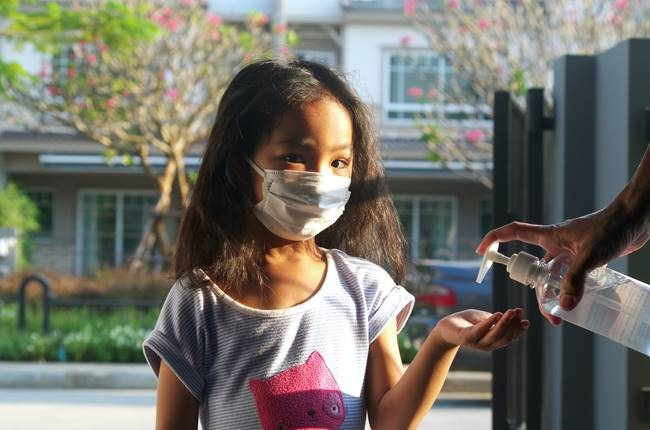
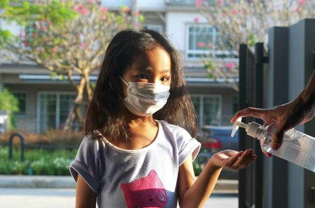

Our Commitment to Health & Safety
COVID-19 Plan
SACC is committed to protecting the health of our children, families, staff, and community. The following policies were designed in response to guidance from the Michigan Departments of Licensing and Regulatory Affairs (LARA) and Health and Human Services, in accordance with best practices from the Centers for Disease Control and Prevention, and with everyone's well-being in mind. To limit the potential spread of COVID-19, we will be making some temporary changes to our programming that include robust cleaning and disinfecting procedures and minimizing opportunities for person-to-person exposure (e.g., an infected person spreading respiratory droplets through actions such as coughing, sneezing, or talking). The following plan outlines the recommended practices and strategies will use to protect the health of our children, staff, and families while at the same time ensuring that children are experiencing developmentally appropriate and responsive interactions and environments.
We will use the following strategies in our classrooms and facilities to minimize the spread of illness:
- Where possible, dividing large group spaces to allow more children to safely use the space (e.g., using child- sized furniture, such as rolling shelves and kitchenettes, to divide a room and prevent mixing between groups of children).
- Where possible, limiting or eliminating use of common spaces in the classrooms/facility. When common spaces must be used, we will rotate use of the space and clean between groups.
- Using touchless trash cans to provide a hands-free way to dispose of tissues and contaminants.
- Ensuring ventilation systems operate properly and increasing circulation of outdoor air as much as possible (e.g., keeping windows and doors open to the extent that this does not pose safety risks).
- Please note that social distancing will be utilized whenever possible. Field trips and on-site presenters will not be scheduled at this time. Limited attendance policies may be instituted to insure social distancing.
At this time, we will make the following changes to the toys and materials in our classrooms:
- We will remove toys and objects which cannot be easily cleaned or sanitized between use.
- Given that cloth toys are not recommended at this time, we will remove these from classrooms.
- We will temporarily suspend use of water and sensory tables.
- Toys will be washed and sanitized before being moved from one group of children to another.
- Children will be asked to supply their own craft boxes with crayons, markers, scissors, glue sticks, etc.
To limit opportunities for exposure during mealtimes, we will engage in the following recommended practices:
- Staff and children will wash hands before and immediately after children have eaten.
- We will space seating as far apart as possible (ideally 6 feet apart) by limiting the number of children sitting together and rearranging seating.
- Staff will ensure children wash their hands before eating and after using the bathroom.
- Staff will wear gloves when serving or assisting children with food during snack and lunch.
Daily Temperature Checks
As fever is the key indicator of COVID-19 in children, we will check each child's temperature upon daily arrival to the program. Staff will also be asked to take their own temperatures upon arrival to work. Staff will re-check children's temperatures throughout the day if they appear ill or "not themselves" (e.g., flushed cheeks, rapid or difficulty breathing without recent physical activity, fatigue, or extreme fussiness).
- When children arrive to the program, temperature checks will occur before children enter their classroom.
- Each child's temperature will be taken by program staff.
- Directors and SACC staff members will be responsible for temperature checks.
- To minimize potential spread of illness, staff will wear a face mask while taking the child’s temperature.
 
